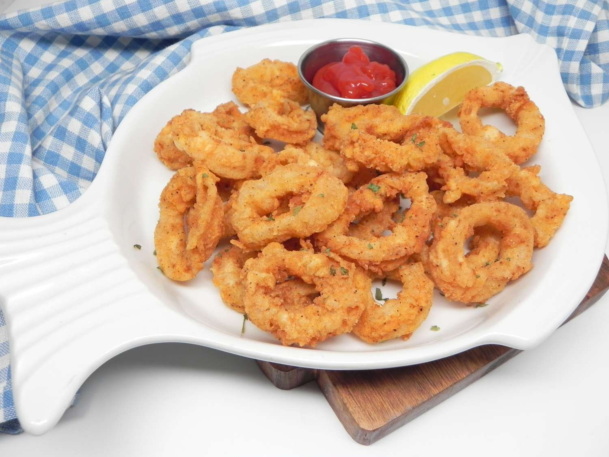

back to the odin recipes
Fried Calamari

Ingredients:
- 1 lb. squid
- 1/2 cup all-purpose flour
- 1/2 tsp salt
- 1/4 tsp black pepper
- 1/4 tsp garlic powder
- vegetable oil
Instructions:
-
Clean the squid by pulling out the head and the insides. Slice into
rings and pat them dry with a paper towel.
-
In a separate bowl, combine the flour, salt, black pepper, and garlic
powder.
-
Heat up a large pot and add in enough vegetable oil to cover the squid.
-
While the oil is heating up, toss the squid rings in the flour mixture
until fully coated.
-
Once the oil is heated to around 375°F, carefully add in the
flour-coated squid rings, and shallow-fry for about 2-3 minutes or until
golden brown.
-
Using a slotted spoon, remove the fried calamari from the oil and place
them onto a paper towel-lined plate to drain excess oil.
- Serve hot with lemon wedges and tartar sauce.